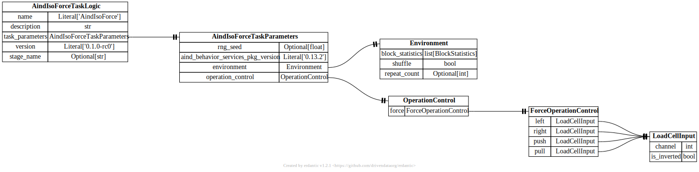

api.task_logic¶
{kind=link}
- class aind_behavior_iso_force.task_logic.Action(value)[source]¶
Bases:
IntFlagDefines the action types
- pydantic model aind_behavior_iso_force.task_logic.AindIsoForceTaskLogic[source]¶
Bases:
AindBehaviorTaskLogicModel- Config:
extra: str = forbid
validate_assignment: bool = True
validate_default: bool = True
strict: bool = True
str_strip_whitespace: bool = True
- Fields:
- Validators:
coerce_version»version
- field task_parameters: AindIsoForceTaskParameters [Required][source]¶
Parameters of the task logic
- pydantic model aind_behavior_iso_force.task_logic.AindIsoForceTaskParameters[source]¶
Bases:
TaskParameters- Config:
extra: str = allow
validate_assignment: bool = True
validate_default: bool = True
strict: bool = True
str_strip_whitespace: bool = True
- Fields:
- Validators:
- field environment: Environment [Required][source]¶
Environment settings
- field operation_control: OperationControl = OperationControl(force=ForceOperationControl(left=LoadCellInput(channel=0, is_inverted=False), right=LoadCellInput(channel=0, is_inverted=True), push=LoadCellInput(channel=1, is_inverted=False), pull=LoadCellInput(channel=1, is_inverted=True)))[source]¶
Operation control
- pydantic model aind_behavior_iso_force.task_logic.Block[source]¶
Bases:
BaseModel- Fields:
- pydantic model aind_behavior_iso_force.task_logic.BlockGenerator[source]¶
Bases:
BaseModel- Fields:
- field block_size: Distribution = UniformDistribution(family=<DistributionFamily.UNIFORM: 'Uniform'>, distribution_parameters=UniformDistributionParameters(family=<DistributionFamily.UNIFORM: 'Uniform'>, min=50.0, max=60.0), truncation_parameters=None, scaling_parameters=None)[source]¶
Size of the block
- class aind_behavior_iso_force.task_logic.BlockStatisticsMode(value)[source]¶
Bases:
str,EnumDefines the mode of the environment
- pydantic model aind_behavior_iso_force.task_logic.CrossingOutcome[source]¶
Bases:
BaseModel- Fields:
- field end: Timestamped[ThresholdedJoystickForce] [Required][source]¶
End of the crossing
- field start: Timestamped[ThresholdedJoystickForce] [Required][source]¶
Start of the crossing
- pydantic model aind_behavior_iso_force.task_logic.Environment[source]¶
Bases:
BaseModel
- pydantic model aind_behavior_iso_force.task_logic.ForceOperationControl[source]¶
Bases:
BaseModel- Fields:
- field left: LoadCellInput = LoadCellInput(channel=0, is_inverted=False)[source]¶
Left load cell input
- field pull: LoadCellInput = LoadCellInput(channel=1, is_inverted=True)[source]¶
Pull load cell input
- field push: LoadCellInput = LoadCellInput(channel=1, is_inverted=False)[source]¶
Push load cell input
- field right: LoadCellInput = LoadCellInput(channel=0, is_inverted=True)[source]¶
Right load cell input
- pydantic model aind_behavior_iso_force.task_logic.LoadCellInput[source]¶
Bases:
BaseModel- Fields:
- pydantic model aind_behavior_iso_force.task_logic.OperationControl[source]¶
Bases:
BaseModel- field force: ForceOperationControl = ForceOperationControl(left=LoadCellInput(channel=0, is_inverted=False), right=LoadCellInput(channel=0, is_inverted=True), push=LoadCellInput(channel=1, is_inverted=False), pull=LoadCellInput(channel=1, is_inverted=True))[source]¶
Operation control for force sensor
- pydantic model aind_behavior_iso_force.task_logic.QuiescencePeriod[source]¶
Bases:
BaseModelDefines a quiescence settings
- field duration: Distribution = Scalar(family=<DistributionFamily.SCALAR: 'Scalar'>, distribution_parameters=ScalarDistributionParameter(family=<DistributionFamily.SCALAR: 'Scalar'>, value=0.5), truncation_parameters=None, scaling_parameters=None)[source]¶
Duration force has to stay below threshold to start the trial.
- field force_threshold: ForceThreshold = ForceThreshold(left=None, right=None, push=None, pull=None)[source]¶
Threshold for the force sensors to be considered quiescent.
- pydantic model aind_behavior_iso_force.task_logic.ResponsePeriod[source]¶
Bases:
BaseModelDefines a response period
- Fields:
- Validators:
_validate_rewarded_action_vs_threshold»all fields
- field duration: Distribution = Scalar(family=<DistributionFamily.SCALAR: 'Scalar'>, distribution_parameters=ScalarDistributionParameter(family=<DistributionFamily.SCALAR: 'Scalar'>, value=0.5), truncation_parameters=None, scaling_parameters=None)[source]¶
Duration of the response period. I.e. the time the animal has to make a choice.
- Validated by:
_validate_rewarded_action_vs_threshold
- field force_duration: Distribution = Scalar(family=<DistributionFamily.SCALAR: 'Scalar'>, distribution_parameters=ScalarDistributionParameter(family=<DistributionFamily.SCALAR: 'Scalar'>, value=0.05), truncation_parameters=None, scaling_parameters=None)[source]¶
Duration the force must stay above threshold.
- Validated by:
_validate_rewarded_action_vs_threshold
- field force_threshold: ForceThreshold = ForceThreshold(left=None, right=None, push=None, pull=None)[source]¶
Threshold for the force sensors to be considered active. If None, the crossings will be ignored.
- Validated by:
_validate_rewarded_action_vs_threshold
- pydantic model aind_behavior_iso_force.task_logic.Reward[source]¶
Bases:
BaseModel- field amount: Distribution = Scalar(family=<DistributionFamily.SCALAR: 'Scalar'>, distribution_parameters=ScalarDistributionParameter(family=<DistributionFamily.SCALAR: 'Scalar'>, value=1.0), truncation_parameters=None, scaling_parameters=None)[source]¶
Amount of reward to dispense
- pydantic model aind_behavior_iso_force.task_logic.ThresholdedJoystickForce[source]¶
Bases:
BaseModel- Fields:
- field joystick_force: JoystickForce [Required][source]¶
Joystick force values that triggered the event
- pydantic model aind_behavior_iso_force.task_logic.Trial[source]¶
Bases:
BaseModelDefines a trial
- Fields:
- field inter_trial_interval: Distribution = Scalar(family=<DistributionFamily.SCALAR: 'Scalar'>, distribution_parameters=ScalarDistributionParameter(family=<DistributionFamily.SCALAR: 'Scalar'>, value=0.5), truncation_parameters=None, scaling_parameters=None)[source]¶
Time between trials
- field quiescence_period: QuiescencePeriod | None = None[source]¶
Quiescence settings
- field response_period: ResponsePeriod = ResponsePeriod(duration=Scalar(family=<DistributionFamily.SCALAR: 'Scalar'>, distribution_parameters=ScalarDistributionParameter(family=<DistributionFamily.SCALAR: 'Scalar'>, value=0.5), truncation_parameters=None, scaling_parameters=None), force_threshold=ForceThreshold(left=None, right=None, push=None, pull=None), rewarded_action=<Action.NONE: 0>, force_duration=Scalar(family=<DistributionFamily.SCALAR: 'Scalar'>, distribution_parameters=ScalarDistributionParameter(family=<DistributionFamily.SCALAR: 'Scalar'>, value=0.05), truncation_parameters=None, scaling_parameters=None))[source]¶
Response settings
- field reward_period: RewardPeriod = Reward(reward_type='Pavlovian', amount=Scalar(family=<DistributionFamily.SCALAR: 'Scalar'>, distribution_parameters=ScalarDistributionParameter(family=<DistributionFamily.SCALAR: 'Scalar'>, value=1.0), truncation_parameters=None, scaling_parameters=None), delay=Scalar(family=<DistributionFamily.SCALAR: 'Scalar'>, distribution_parameters=ScalarDistributionParameter(family=<DistributionFamily.SCALAR: 'Scalar'>, value=0.0), truncation_parameters=None, scaling_parameters=None))[source]¶
Reward settings
- aind_behavior_iso_force.task_logic.normal_distribution_value(mean: float, std: float) NormalDistribution[source]¶
Helper function to create a normal distribution for a given range.
- Parameters:
mean (float) – The mean value of the normal distribution.
std (float) – The standard deviation of the normal distribution.
- Returns:
The normal distribution type.
- Return type:
distributions.Normal
- aind_behavior_iso_force.task_logic.scalar_value(value: float) Scalar[source]¶
Helper function to create a scalar value distribution for a given value.
- Parameters:
value (float) – The value of the scalar distribution.
- Returns:
The scalar distribution type.
- Return type:
distributions.Scalar
- aind_behavior_iso_force.task_logic.uniform_distribution_value(min: float, max: float) UniformDistribution[source]¶
Helper function to create a uniform distribution for a given range.
- Parameters:
min (float) – The minimum value of the uniform distribution.
max (float) – The maximum value of the uniform distribution.
- Returns:
The uniform distribution type.
- Return type:
distributions.Uniform